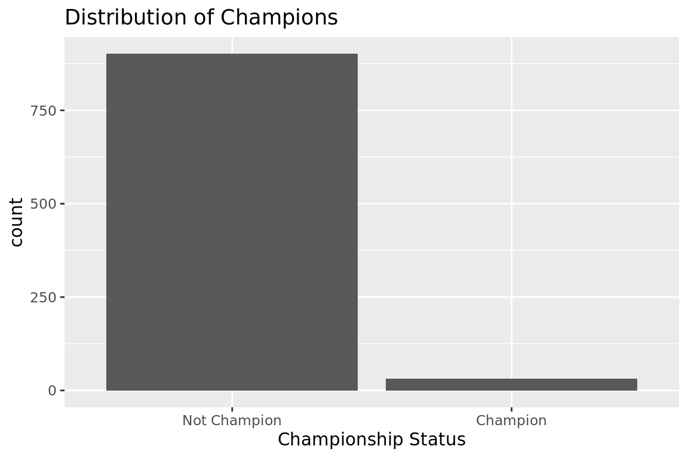
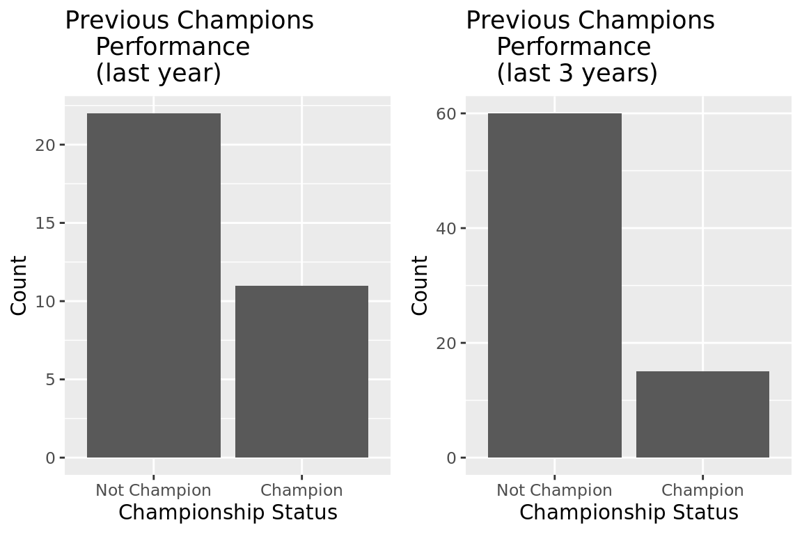
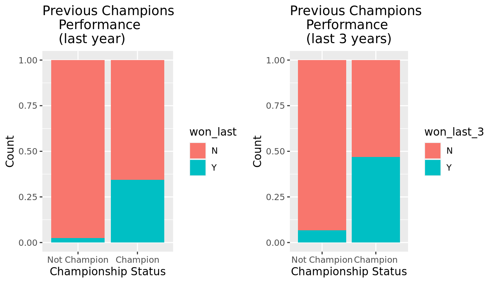
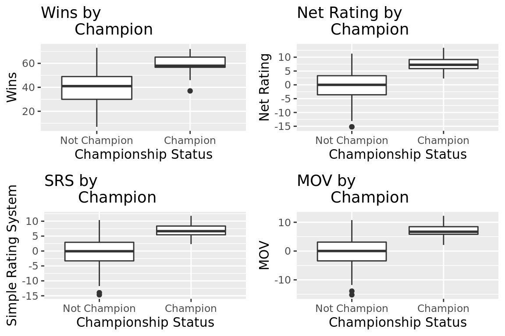
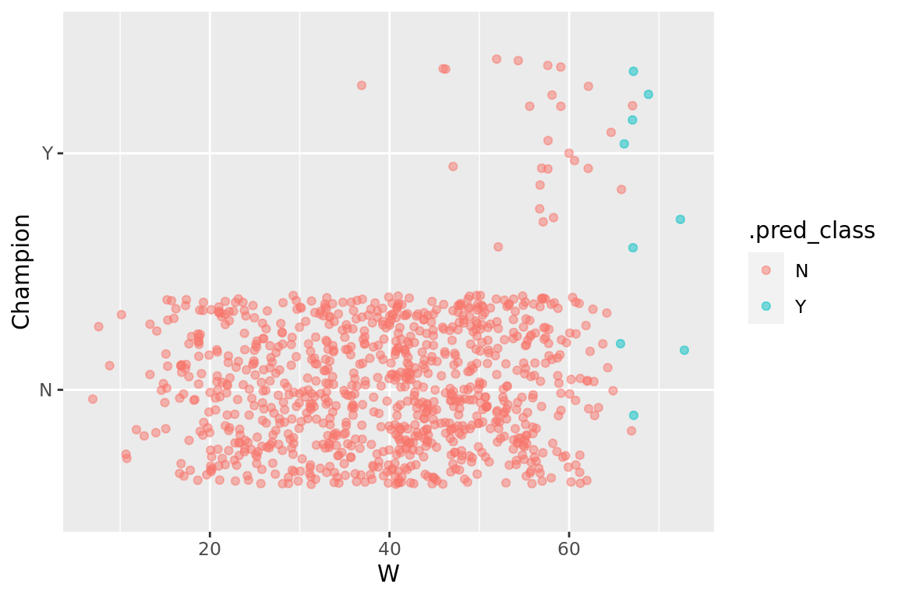

NBA Exploratory Data Analysis
Visualizing the Distribution of the Response Variable

Visualizing the Relationship Between Discrete Variables and the Response Variable

Visualizing the Relative Chance of Winning the Championship

Visualizing the Relationship between the Championship and Potential Predictors

Creating a log model
# A tibble: 5 × 5
term estimate std.error statistic p.value
<chr> <dbl> <dbl> <dbl> <dbl>
1 (Intercept) -7.57 1.97 -3.84 0.000123
2 W 0.0399 0.0449 0.887 0.375
3 MOV -0.579 0.927 -0.625 0.532
4 SRS 0.325 0.611 0.532 0.595
5 NRtg 0.740 0.651 1.14 0.256 Predicting Championship for 3 Hypothetical Teams
# A tibble: 3 × 4
W MOV SRS NRtg
<dbl> <dbl> <dbl> <dbl>
1 40 2 -1 2
2 67 4 3.5 5
3 80 8 5 9# A tibble: 3 × 2
.pred_N .pred_Y
<dbl> <dbl>
1 0.997 0.00253
2 0.915 0.0851
3 0.674 0.326 Visualizing the Distribution of the Response Variable

Predicting the Given Year’s Champion using the Predictors in Model
[1] "Chicago Bulls"[1] "W: 72"[1] "SRS: 11.8"[1] "MOV: 12.24"[1] "NRtg: 13.4"